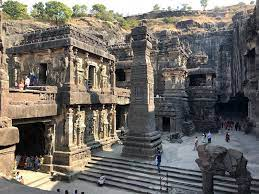
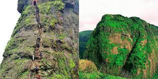
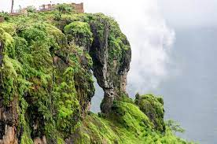
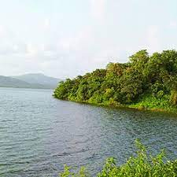
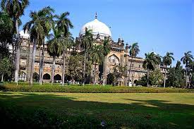
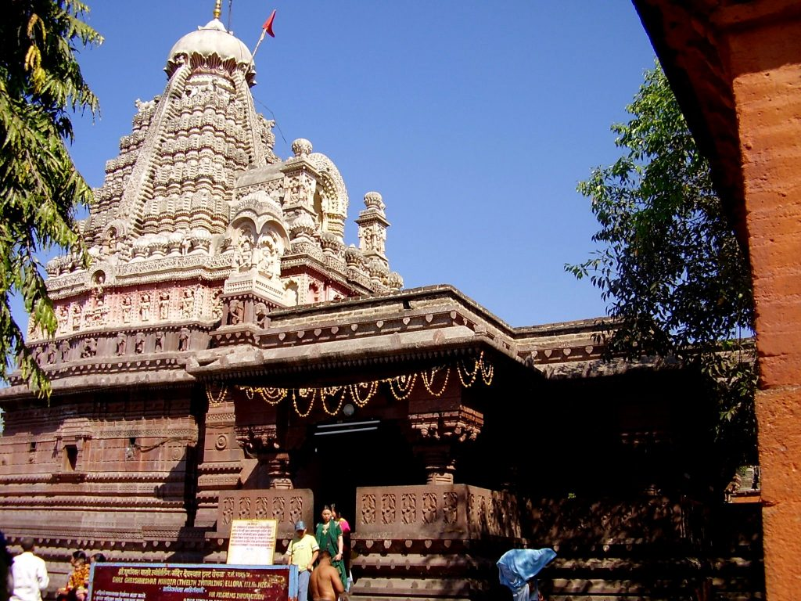
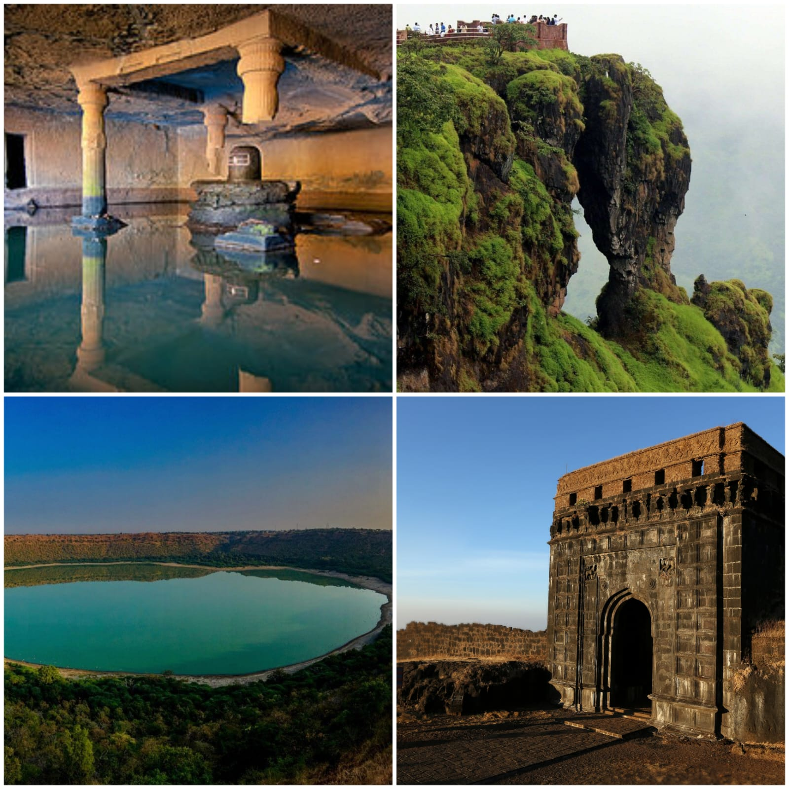

Beaches
Beaches are natural landforms where the land meets the ocean, characterized by sandy or pebbly
shores. They are formed by the action of waves, currents, and tides depositing sediments along
the coastline. Beaches are popular destinations for recreation, relaxation, and various water
activities such as swimming, sunbathing, surfing, and beach sports. They are also important
ecosystems, providing habitats for diverse plant and animal species.

Caves
Caves are natural underground openings or chambers formed by various geological processes, such
as erosion, chemical reactions, or the dissolution of rocks like limestone. They can range in
size from small passages to vast chambers, often featuring unique formations like stalactites
and stalagmites created by dripping water over thousands of years. Caves can be found all around
the world and are often explored by spelunkers or cave enthusiasts for their beauty and
scientific value.

Forts
A fort is a fortified structure built for defensive purposes, often used in military strategies
to protect a strategic location or settlement. Forts can vary in size and design, from small
outposts to large citadels. They typically include features such as walls, bastions, ramparts,
and sometimes moats. Throughout history, forts have played a significant role in warfare,
serving as strongholds for armies, protecting borders, and safeguarding cities or regions from
enemy attacks. Today, many forts are preserved as historical sites or tourist attractions,
offering insights into military history and architecture.

Hill Station
Hill stations are elevated towns or resorts located in hilly or mountainous regions, often
offering cooler climates compared to the surrounding lowlands. These destinations are
popular for their pleasant weather, scenic beauty, and opportunities for outdoor activities
such as trekking, hiking, and sightseeing. Hill stations are typically developed with
hotels, guesthouses, and recreational facilities to cater to tourists seeking a retreat from
the heat and hustle of the plains. They are common in countries like India, Sri Lanka,
Nepal, and many other mountainous regions around the world, serving as refreshing getaways
for travelers seeking relaxation amidst nature's splendor.

Lakes
Lakes are bodies of water that are larger than ponds and smaller than seas, surrounded by
land on all sides. They are formed by various geological processes such as tectonic
movements, glacial activity, or volcanic eruptions. Lakes can be freshwater or saline, and
they support diverse ecosystems of plants and animals. They are important sources of
drinking water, irrigation, and recreational activities such as boating, fishing, and
swimming. Lakes also play a crucial role in regulating local climates and supporting
biodiversity.

Museums
Museums are institutions that collect, preserve, and display objects of artistic, cultural,
historical, or scientific significance for public viewing and education. They house a wide
range of artifacts, artworks, specimens, and exhibits, offering insights into various
aspects of human history, culture, and the natural world. Museums often organize
exhibitions, educational programs, and events to engage visitors and promote learning. They
play a crucial role in preserving and interpreting our collective heritage, fostering
appreciation for art, history, and science among diverse audiences.

Temples
Temples are religious structures or places of worship, typically associated with specific
religions or belief systems. They are often designed with architectural features that
reflect the beliefs and practices of the religion they represent. Temples serve as sacred
spaces where adherents gather to perform rituals, prayers, and ceremonies, paying homage to
their deities or spiritual figures. They can vary widely in size and design, from small
shrines to elaborate complexes with ornate decorations and sculptures. Temples are important
cultural and spiritual centers within their communities, offering a place for reflection,
meditation, and connection with the divine.

Explore more
Discover more hidden treasures in our state, where every corner tells a unique story. From
scenic landscapes to vibrant cities, there's an adventure waiting for every explorer.
Immerse yourself in local culture, savor diverse cuisines, and unravel the history that
shapes our extraordinary state. Pack your bags and dive into a journey of endless
exploration, where each place reveals its own charm. There's always more to see and
experience, so start your adventure today!.